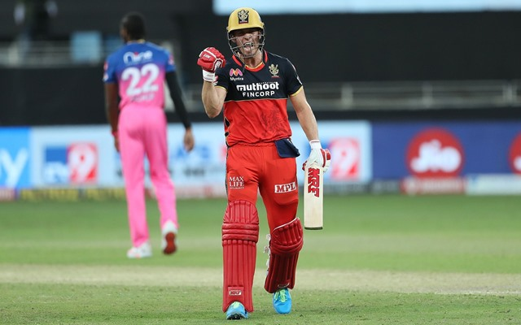
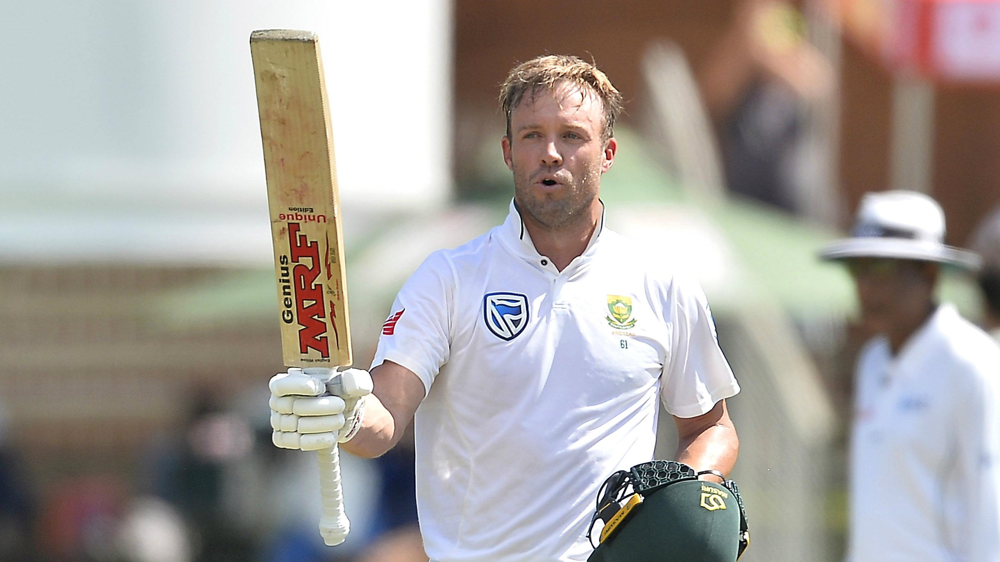

De Villiers announces his retirement from all forms of cricket after a stellar 17-year career scoring more than 20,000 runs.
De Villiers had retired from all international formats in 2018 but was in talks about a return to the limited-overs side for the 2021 Twenty20 World Cup before deciding against playing for the Proteas again.
He was still involved in franchise cricket, last playing in the Indian Premier League (IPL) for Royal Challengers Bangalore (RCB). RCB described his retirement as the “end of an era” after a decade with the South Indian side.
Often referred to as “Mr 360” for his wide range of shots which found all corners of the boundary, de Villiers played 114 Tests, 228 ODIs and 78 T20 internationals for South Africa, scoring more than 20,000 runs across the three formats.
“Ever since the backyard matches with my older brothers, I have played the game with pure enjoyment and unbridled enthusiasm. Now, at the age of 37, that flame no longer burns so brightly.”
“Our bond is beyond the game and will always be.” - Virat Kohli

India’s Virat Kohli, who once described RCB teammate de Villiers as the IPL’s “most impactful match-winner”, said his decision to retire “hurts his heart” but knew it was made keeping family in mind.
“To the best player of our times and the most inspirational person I’ve met, you can be very proud of what you’ve done and what you’ve given to RCB, my brother,” Kohli said on Twitter.
The South African also holds the record for the fastest ODI century, reaching triple figures in just 31 deliveries in a knock of 149 against the West Indies in Johannesburg in 2015, smashing 16 sixes and nine boundaries.